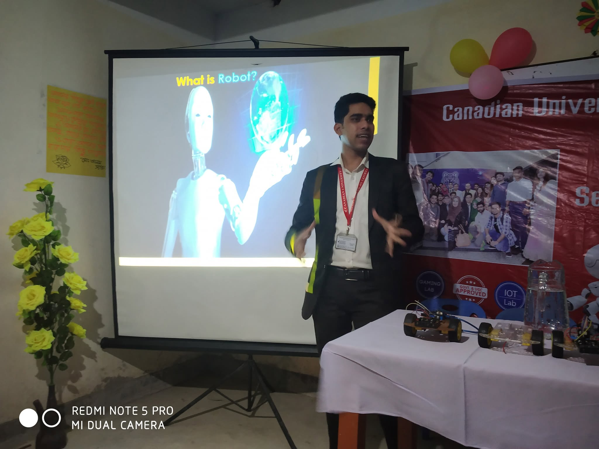
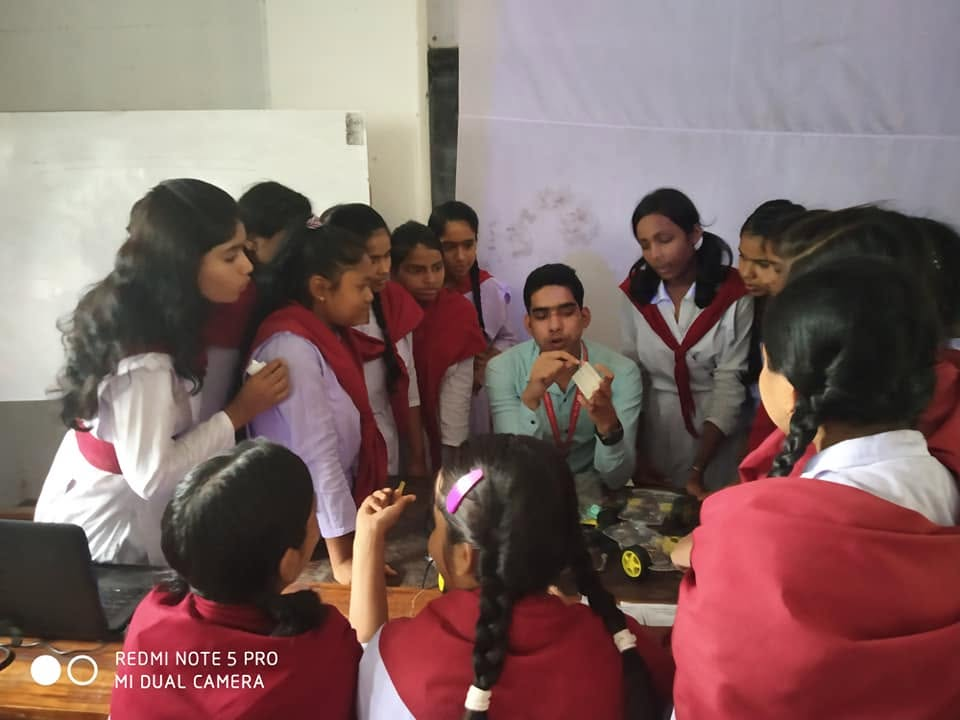
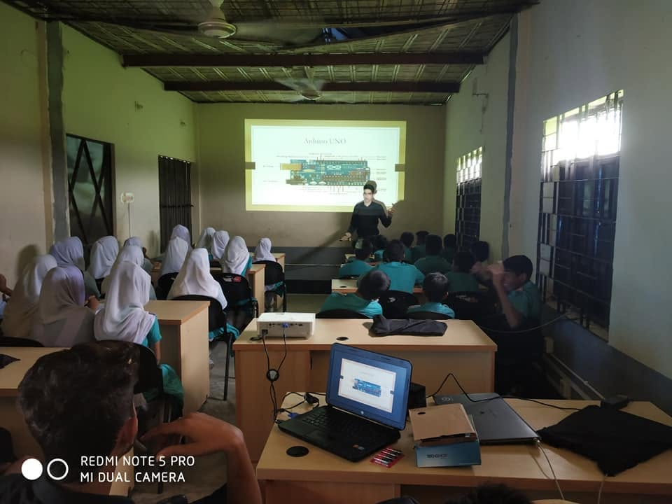

Advanced Research CLI
Type commands (e.g., 'help', 'bio', 'metrics', 'clear')Welcome to Rahatul's Advanced CLI v3.0
Type 'help' or click buttons below.
$ _
Research Interests
Education
Doctor of Philosophy
Department of Life Science and Systems Engineering
Graduate School of Life Science and Systems Engineering
Kyushu Institute of Technology, Fukuoka, Japan
Research Focus: Computer Vision, Deep Learning, Person Re-Identification and Object Tracking
M.Sc. in Engineering
Department of Human Intelligence Systems
Graduate School of Life Science and Systems Engineering
Kyushu Institute of Technology, Fukuoka, Japan
Research Focus: Computer Vision, Deep Learning, Person Re-Identification and Object Tracking
Thesis Title: “A comprehensive study of kid activity recognition with monitoring activity level and jumping behavior analysis using computer vision and image processing.”
B.Sc. in Engineering
Department of Electrical and Electronic Engineering
Canadian University of Bangladesh, Dhaka
Research Focus: Robotics
Thesis Title: “Design and Implementation of Smart Social Distancing Systems.”
Employment History
Research Assistant
Kyushu Institute of Technology, Fukuoka, Japan
Research Focus: Human behavior analysis using computer vision & image processing.
Research Assistant
Canadian University of Bangladesh, Dhaka
Research Focus: Robotics.
Technical Skills & Tech Stack
Programming Languages
Python, C++, MATLAB
Frameworks
TensorFlow, PyTorch, Keras, Scikit-Learn
Computer Vision
OpenCV, YOLO, Vision Transformer, CNN, MoViNet, ANN
Machine Learning
LR, DT, RF, Adaboost, XAI, XGBoost
Databases & Tools
SQL, MySQL, Tableau, Power BI
Hardware & Others
Proteus, Arduino, Eagle, STM32, Jetson, LaTeX
Others
Adobe Photoshop, Illustrator
Research Publications (Total: 20)
Journal Proceedings
Md. Rahatul Islam ; Kataoka, Y.; Teramoto, K.; Horio, Keiichi.
“Spatially Time-Based Robust Tracking and Re-Identification of Kindergarten Students: A Hybrid Deep Learning Framework Combining YOLOv8n and Vision Transformer (Vit).”
Journal of Imaging 2026, 12, 150.
Scopus Indexed | https://doi.org/10.3390/jimaging12040150
Islam Ferdib-Al, Sen Tonmay, Shamim Md. Shamim Parvej, Gharami Partha Protim and Md. Rahatul Islam
“Deep Learning-based Multiclass Dementia Stage Classification for Alzheimer’s Disease Diagnosis from Imbalanced MRI Images Using Transfer Learning and Grad-CAM Explainability.”
Engineering Research Express, 2026
Scopus Indexed | http://iopscience.iop.org/article/10.1088/2631-8695/ae6a63
Ferdib-Al-Islam, Biswas, Prithvi, Gharami, Partha Protim, Md. Rahatul Islam .
“XMP-Net: An XAI-Based Modified Xception Model for Recognizing Monkeypox and Other Skin Diseases.”
BioMed Research International, 2026, 1113178, 13 pages.
Scopus Indexed | https://doi.org/10.1155/bmri/1113178
Conference Proceedings
Md. Shamim Parvej; Kaysun Molla; Shahid Rahman; Nazim Uddin; Md. Rahatul Islam , Ferdib-Al-Islam; K. M. Danial Sadad.
“Leveraging deep learning for classifying common skin diseases in Bangladesh with Grad-CAM explainability.”
AIP Conference Proceedings, 2026.
Scopus Indexed | https://doi.org/10.1063/5.0329124
Tiya Bisla; Ritik Shukla; Yui Kataoka; Keisuke Teramoto; Md. Rahatul Islam , Keiichi HORIO.
“A Multi-Stage Deep Learning and Computer Vision Framework for Robust Child Identification in Kindergarten.”
2026 14th International Conference on Information and Education Technology (ICIET), Koriyama, Japan.
Scopus Indexed | https://ieeexplore.ieee.org/document/11561624/
AWARD: Best Paper Award
Ritik Shukla; Tiya Bisla; Yui Kataoka; Keisuke Teramoto; Md. Rahatul Islam , Keiichi HORIO.
“BENCHMARKING FACE RECOGNITION MODELS ON POSE-AWARE CHILD FACE EMBEDDINGS.”
ICIC Express Letters, Part B: Applications, 2026.
Scopus Indexed | https://doi.org/10.24507/icicelb.17.06.533
T. Bisla, R. Shukla, M. Dhawan, Md. Rahatul Islam and K. Horio.
“Jumping behavior Analysis after Identification of Daycare Children’s Activities utilizing YOLOv8 Algorithm.”
2024 IEEE International Conference on Electronics, Computing and Communication Technologies (CONECCT), Bangalore, India, 2024, pp. 1-6.
Scopus Indexed | https://ieeexplore.ieee.org/document/10677280
Tiya Bisla, Ritik Shukla, Mansi Dhawan, Md. Rahatul Islam , Takao Koyasu, Keisuke Teramoto, Yui Kataoka, Keiichi HORIO.
“Kid Activity Recognition: A Comprehensive study of kid activity recognition with monitoring activity level using YOLOv8s Algorithms.”
2024 3rd International Conference on Artificial Intelligence For Internet of Things (AIIoT), Vellore, India, 2024, pp. 1-6.
Scopus Indexed | https://ieeexplore.ieee.org/document/10574569
AWARD: Best Paper Award
Md. Rahatul Islam and Keiichi Horio.
“Identification of Human Activity by Utilizing YOLOv5s Approaches.”
2024 IEEE 3rd International Conference on Computing and Machine Intelligence (ICMI), Mt Pleasant, MI, USA, 2024, pp. 1-7.
Scopus Indexed | https://ieeexplore.ieee.org/document/10586161
M. M. Hosen, Md. Rahatul Islam , F. Tabassum, S. T. Tonni, M. M. N. Noor and S. Rahman.
“Localization of Dengue Virus Likelihood Using Image Processing Technique.”
2024 International Conference on Emerging Smart Computing and Informatics (ESCI), Pune, India, 2024, pp. 1-7.
Scopus Indexed | https://ieeexplore.ieee.org/document/10497351
F. Tabassum, Md. Rahatul Islam , M. S. Ur Rahman and J. Majumder.
“A Comprehensive Study on Different Optimizations of Pure Reference Counting Garbage Collectors.”
2023 International Conference on Computational Intelligence, Networks and Security (ICCINS), Mylavaram, India, 2023, pp. 1-6.
Scopus Indexed | https://ieeexplore.ieee.org/document/10450100
Mahmud, I., Ferdib-Al-Islam, Md. Rahatul Islam , Israk, M.A., Rahman, M.S.U., Ahuja, S.
“IoT-Based Smart Poultry and Hatchery Farm: An Integrated Solution with Anti-Theft and Fire Alarm System.”
Hybrid Intelligent Systems. HIS 2023. Lecture Notes in Networks and Systems, vol 1226.
Scopus Indexed | https://doi.org/10.1007/978-3-031-78934-2_35
Md. Rahatul Islam , Rokon Uz Zaman, A. B. M., Ferdib-Al-Islam, Tabassum, Faria, Israk, Md. Araf, Mahmud, Md. Shakir, Majumder, Jimmy.
“Crime Prediction by Detecting Violent Objects and Activity Using Pre-Trained YOLOv8n and MoViNet A0 Models.”
2023 International Conference on Modeling and E-Information Research... Karawang, Indonesia, 2023, pp. 44-49.
Scopus Indexed | https://ieeexplore.ieee.org/document/10458156
Islam-Al-F., M. S. Sanim, K. M. Hasan, M. M. Alam, M. A. A. Walid, Md. Rahatul Islam .
“Crop-RecFIS: Machine Learning Classifiers for Crop Recommendation and Feature Importance Scores Calculation.”
2023 14th International Conference on Computing Communication and Networking Technologies (ICCCNT), Delhi, India, 2023, pp. 1-6.
Scopus Indexed | https://ieeexplore.ieee.org/document/10307833
Ferdib-Al-Islam, A. Saha, E. J. Bristy, Md. Rahatul Islam , R. Afzal and S. A. Ridita.
“LIME-based Explainable AI Models for Predicting Disease from Patient’s Symptoms.”
2023 14th International Conference on Computing Communication and Networking Technologies (ICCCNT), Delhi, India, 2023, pp. 1-6.
Scopus Indexed | https://ieeexplore.ieee.org/document/10307223
Md. Rahatul Islam and Keiichi Horio.
“Real Time-Based Face Recognition, Tracking, Counting, and Calculation of Spent Time of Person Using OpenCV and Centroid Tracker Algorithms.”
2023 5th International Conference on Computer Communication and the Internet (ICCCI), Fujisawa, Japan, 2023, pp. 210-216.
Scopus Indexed | https://ieeexplore.ieee.org/document/10210102
Md. Rahatul Islam , M. A. Israk, Ferdib-Al-Islam, J. Majumder and S. Rahman.
“SHD: Development of an Smart Headband for Deafblind People.”
2023 International Conference on Electrical, Computer and Communication Engineering (ECCE), Chittagong, Bangladesh, 2023, pp. 1-5.
Scopus Indexed | https://ieeexplore.ieee.org/document/10101656
Ferdib-Al-Islam, Sanim, M.S., Md. Rahatul Islam , Rahman, S., Afzal, R., Hasan, K.M.
“Prediction of Dementia Using SMOTE Based Oversampling and Stacking Classifier.”
Hybrid Intelligent Systems. HIS 2022. Lecture Notes in Networks and Systems, vol 647.
Scopus Indexed | https://doi.org/10.1007/978-3-031-27409-1_40
Tushar Pokhriyal, Ritik Shukla, Tiya Bisla, Yui Kataoka, Keisuke Teramoto, Md. Rahatul Islam , Keiichi HORIO.
“Automated Quantification of Social Dynamics in Kindergarten Environments using YOLOv8 and Temporal-Buffer Augmented DBSCAN.”
2026 2nd International Conference on Advanced Machine Learning and Data Science (AMLDS),2026 .
Scopus Indexed | https://doi.org/10.1109/AMLDS69611.2026.11724057
Md. Rahatul Islam , R. Afzal, Asaduzzaman, Ferdib-Al-Islam and J. Majumder.
“COV-SSDS: Design and Construction of Automatic Social Distancing System to Minimize COVID-19 Infection.”
2022 International Conference on Advancement in Electrical and Electronic Engineering (ICAEEE), Gazipur, Bangladesh, 2022, pp. 1-6.
Scopus Indexed | https://ieeexplore.ieee.org/document/9836350
Others / Journal Articles (Gold Award)
Sheikh Shihab Hossain, Ferdib-Al-Islam, Md. Rahatul Islam , Shahid Rahman, Md. Shamim Parvej.
“Autism Spectrum disorder identification from facial images using Fine tuned Pre-trained deep learning models and Explainable AI techniques.”
Semarak International Journal of Applied Psychology, 5, Issue 1 (2025) 29-53, 2025.
DOI Link: https://doi.org/10.37934/sijap.5.1.2953b
AWARD: Gold Award
Peer Reviewer Experience
- ISPRS Open Journal of Photogrammetry and Remote Sensing
- IEEE Transactions on Consumer Electronics
- Frontiers in Medical Technology
- IEEE Internet of Things Journal
- The Journal of Engineering
- Conference Reviewer: IEIT, ICCINS, IEEE EDUCON
Honors & Awards
Graduate School of Life Science and Systems Engineering, Kyushu Institute of Technology (Doctoral's Course).
Graduate School of Life Science and Systems Engineering, Kyushu Institute of Technology (Master's Course).
Department of Electrical and Electronic Engineering from Canadian University of Bangladesh for B.Sc. Result.
Licenses & Certifications
Getting Started with AI on Jetson Nano
Issuing: NVIDIA
ID: 3zfxkDuNT32ANTIzqjAoqQ
Python for Data Science
Issuing: IBM
ID: 92dc976e-2d50-4898-87c7-75eca05be292
PyTorch Bootcamp
Issuing: OpenCV University
ID: edd167060ef24d8ba7e04f35de75c455
Computer Vision for Data Scientists
Issuing: LinkedIn Learning
ID: 82d94dc4fd19268fb7016b4f08d5e5ec1fbe9e5fa2fe05ca8f211b72e140e4c6
Artificial Intelligence Foundations: Machine Learning
Issuing: LinkedIn Learning
ID: df2eb8c15c79bdf8e7276df8dec9517a5c8a89b2bad94508dc434631cde51d95
Deep Learning: Getting Started (2024)
Issuing: LinkedIn Learning
ID: 5917355d240748dca95c8746eb31790638f1f862beb1ec90e1d4babe772596fc
Language Skills
Bangla: Mother Tongue
English: Professional proficiency in oral and written communication
Japanese: Beginner N5 level equivalent
Extra-Curricular Activities
Chief Executive Officer & Vice-President
Bangladesh Advance Robotics Research Center
Former President
CUB Robotics Club
Former Executive Director (Human Resource)
Vision 2020 South Asian Project
Former Student Brand Ambassador
Canadian University of Bangladesh
Robo Tech Leadership Program in Bangladesh
Trained up 1000+ students in different districts (Dhaka, Mymensingh, Cumilla, Dinajpur, Sylhet, Chandpur and Chattogram).



Organizer - Let’s Tech Talk “Space Exploration with NASA”
Home & Visited Countries
Home country and countries traveled to for research, conferences, and academic pursuits:
Contact Information
Feel free to reach out for research collaboration, academic discussions, or inquiries.